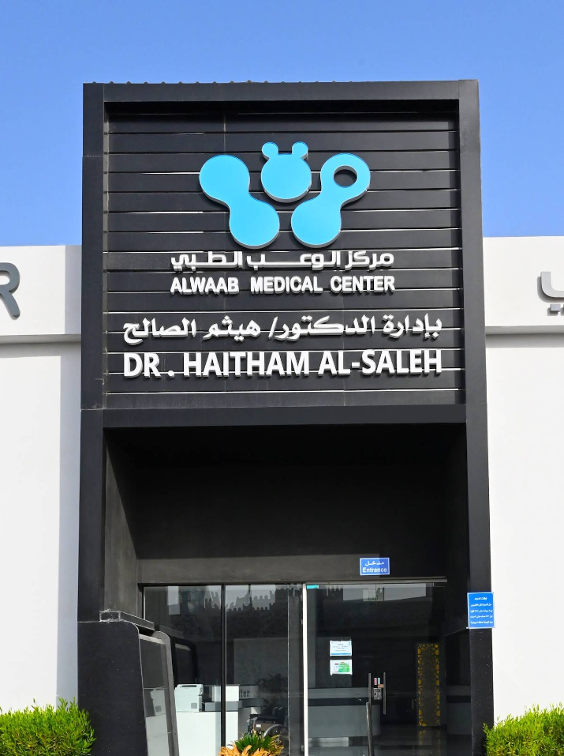

Est. 2011
A New Standard of Specialized Care in Doha
Located in the heart of Al Waab, our medical centre has evolved from a local clinic into a premier multi-specialty destination. We believe that healthcare should be as sophisticated as it is compassionate.
01
Clinical Excellence
We house Qatar’s leading specialists in ENT, Dental, and Dermatology, ensuring every diagnosis is backed by years of expertise.
02
Patient Privacy
Our facility is designed to offer a private, boutique experience, prioritizing your comfort from the moment you enter.
03
Advanced Tech
From diagnostic video-endoscopy to medical-grade cosmetic lasers, we invest in the gold standard of medical equipment.

Trusted by the Community
With over 36,000 patients and a verified status, we are more than just a clinic—we are a health partner for families across Qatar.
- 36.8K Instagram Community
- Verified Healthcare Status
- 100% Patient Satisfaction Focus